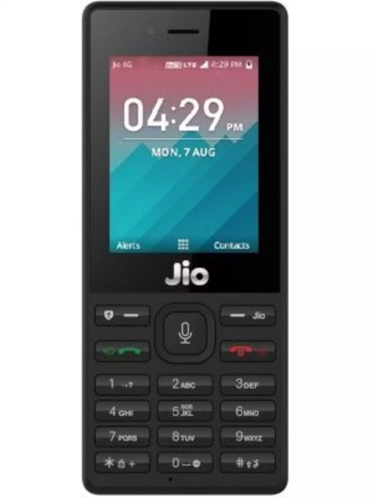
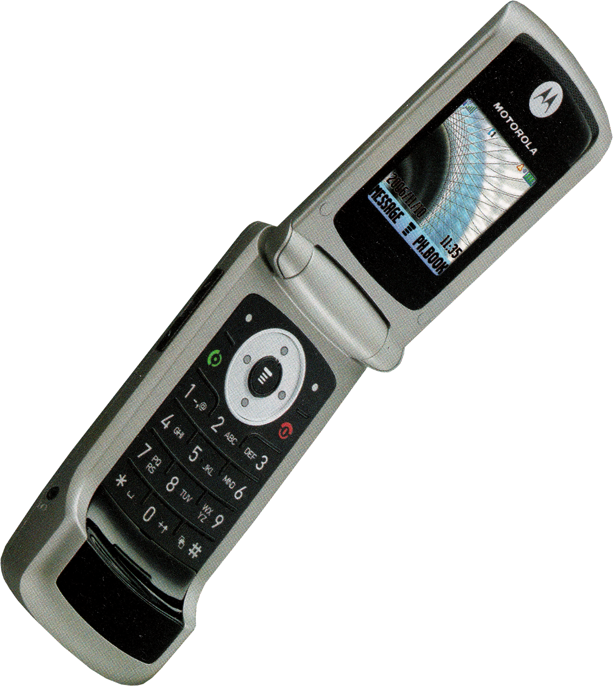

Cateogries

Old Mobiles

Foldable Phones

As technology advances, devices utilizing these technologies become smaller and smaller. Today's cell phones have more computing power than past computers that took up an entire room of space. Modern mobile devices allow users to hold the world -- or at least all of its information, maps, and games in their hands.
Identifying your particular mobile device can be a task in itself. Many different manufacturers make many different products. Usually the manufacturer's name will appear somewhere on the front of the device, and the exact model number will appear on the back or underneath the battery. There is no failsafe mechanism to identify every device, though, so some research might be necessary on your part.
Released on June 29, 2007 the first iPhone blew up the idea of the cell phone, putting a personal computer/phone/assistant at your fingertips at all times, and pioneering the push to the modern era of the smartphone. Since its initial release in 2007, there have been many iterations of the iPhone, released (mostly) on an annual cycle. Each rendition has added new features, faster processing, and improved graphics.
Each iPhone model has a different level of repairability: the 3GS's front glass is replaceable separate from the display assembly (glass panels in later models are not), while the iPhone 4 provided easier repair of the rear panel and battery. Newer iPhones like the iPhone 11 have rear glass panels that are notoriously difficult to repair, but their screens are among the simplest to replace in the industry. With each new design iteration, new iPhone repair challenges arise and old ones are remedied.
Though Apple may tell you otherwise, all of these devices are user-serviceable with the help of our repair guides, found in each of the device pages above.
Book ServiceLearn to Fix Mobile Phone Keypad Not Working – Problem and Solution – Mobile Phone Keypad not working and How to Solve and Fix Keypad Fault in any Mobile Cell Phone. These problem and solution apply to all brands and make of mobile phones including Nokia, Samsung, iPhone, China Mobile Phones, Motorola, HTC, Sony, Blackberry, Alcatel, Apple, AudioVox, Benefone, Danger, FIC, Hagenuk, Palm, Kyocera, LG, Panasonic, Huawei, ZTE, Spice, Lava, Sony Ericsson, Micromax etc
Since their inception, durability has been a pressing issue for foldable devices, as evidenced by the launch problems that plagued the original Galaxy Fold. The Z Flip and Z Fold2 represented a significant leap in build quality, refining the design and greatly improving the hinge mechanism. But even with those changes, there was still the conspicuous absence of any IP rating; it's much harder to waterproof something with moving parts, after all. Thankfully, Samsung may have found a way to bring some level of ingress protection to the upcoming Z Flip2 and Z Fold3
SamMobile reports that there are whispers of these phones featuring a formal IP rating, but it's unknown which level of protection that might be. The Galaxy S21 Ultra has an IP68 rating, meaning it should resist immersion in water or dust at 1.5M for 30 minutes. That phone is relatively easy to secure, with foreign objects only able to enter through the charging port, microphones, speakers, gaps around the buttons, and the sim card tray. On the other hand, a foldable has a complex mechanism of moving parts that makes the hinge work. Trying to protect this system without compromising durability or smooth operation is no simple task.
Book Servicesometimes an Android tablet locks up. It’s frustrating, but if you press and hold the Power/Lock key for about 8 seconds, the tablet turns either off or on, depending on which state it’s in.
TA touchscreen, such as the one on the Android tablet, requires a human finger for proper interaction. The tablet interprets the static potential between the human finger and the device to determine where the touchscreen is being touched. You can use the touchscreen while wearing special touchscreen gloves. Yes, they actually make such things. But for regular gloves? Nope. The touchscreen might fail also when the battery power is low or when the Android tablet has been physically damaged.
Android tablets feature a teensy light sensor on the front. The sensor is used to adjust the touchscreen’s brightness based on the amount of ambient light at your location. If the sensor is covered, the screen can get very, very dark. Ensure that you don’t unintentionally block the light sensor. Avoid buying a case or screen protector that obscures the sensor. The automatic brightness setting might also be vexing you.
Book ServiceWe want opinions from our Customers about how can we strengthen/ improve our services through this online platform. Also, Our customers can suggest us UI designs, BUGS and accessebility issues, we will update them.
© 2022 Siddharth Shravan Jha